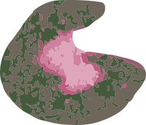
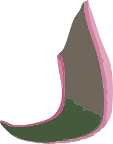
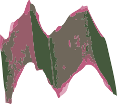
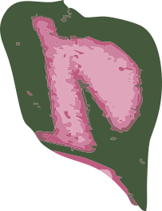
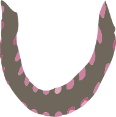
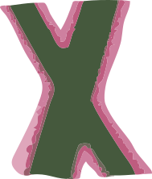

TYPEFACE
A letter begins as a shadow.
Hover to leave an afterimage. Tap to hold its form.
An outline becomes a letter.
Eight letters. Two ways of seeing.
A—Z / THE MOVING ALPHABET
Scroll over the letters to change their pace.

















